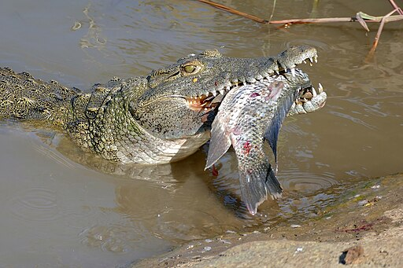
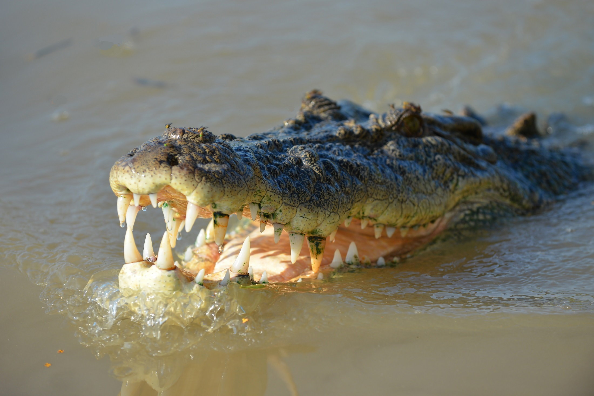
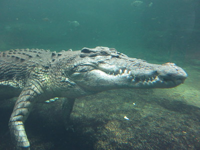

The Saltwater Crocodile
All About These Creatures

Saltwater crocodiles can be found in many areas of the world, specifically Southeats Asia, India's eastcoast, and Australia. These crocodiles are huge, with the average male measuring up to 17 feet. However, they can grow up to 23 feet long! They can weight as much as 2,200-3,300 pounds.
Habitat & Diet
Saltwater crocodiles tend to live in mangrove forests, beaches,
rivers, estuaries, and even the ocean! They are cold blooded so
they enjoy laying in the sun, and when they get too hot they
submerge themselves in the water, leaving their eyes and nostrils
slightly above it. Crocodiles are nighttime hunters. They are
carnivores, and will grab just about any meat that they can
find.
Hunting & Behavior
Saltwater Crocodiles are very agressive and territorial
compared to other crocodiles, especially when it comes to
hunting. They communicate with chirping and growling.
A unique way that crocodiles hunt is by sticking their claws
above the water. This can look funny, but it is actually them
trying to hunt for fish. Special receptors in their hands are
able to detect movement in the water. By doing this they use
less energy trying to catch fish since they are fast, and
instead they wait for the fish to come to them.
Once crocodiles catch larger prey, they preform the "death roll".
Once grapping their prey with their sharp teeth and drowning it,
they hold on and start rolling it around in order to remove its
limbs easier.


